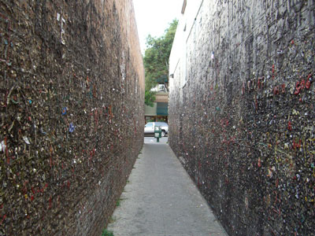
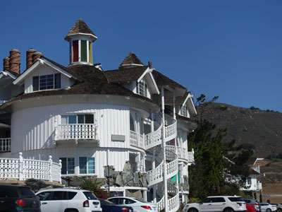
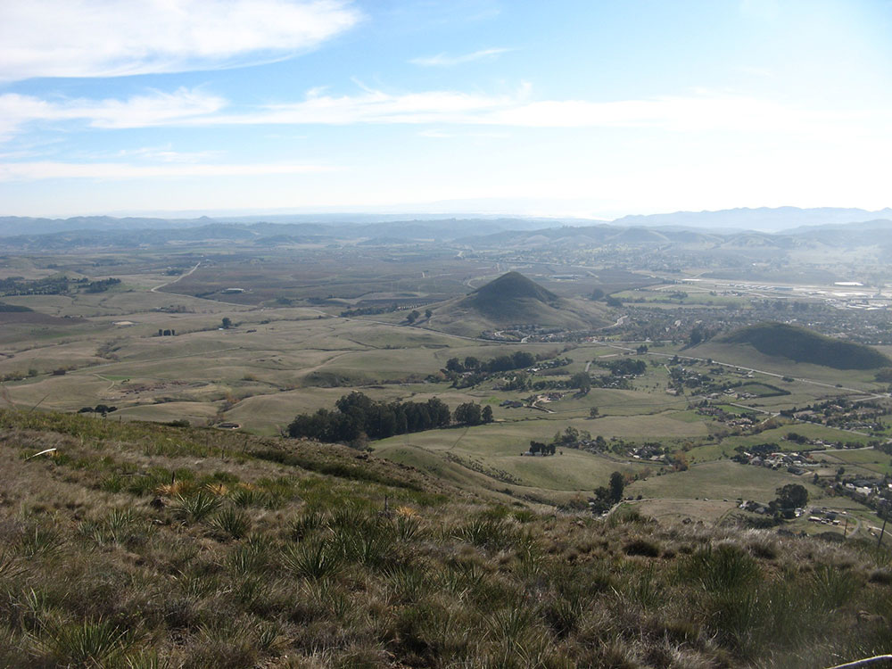
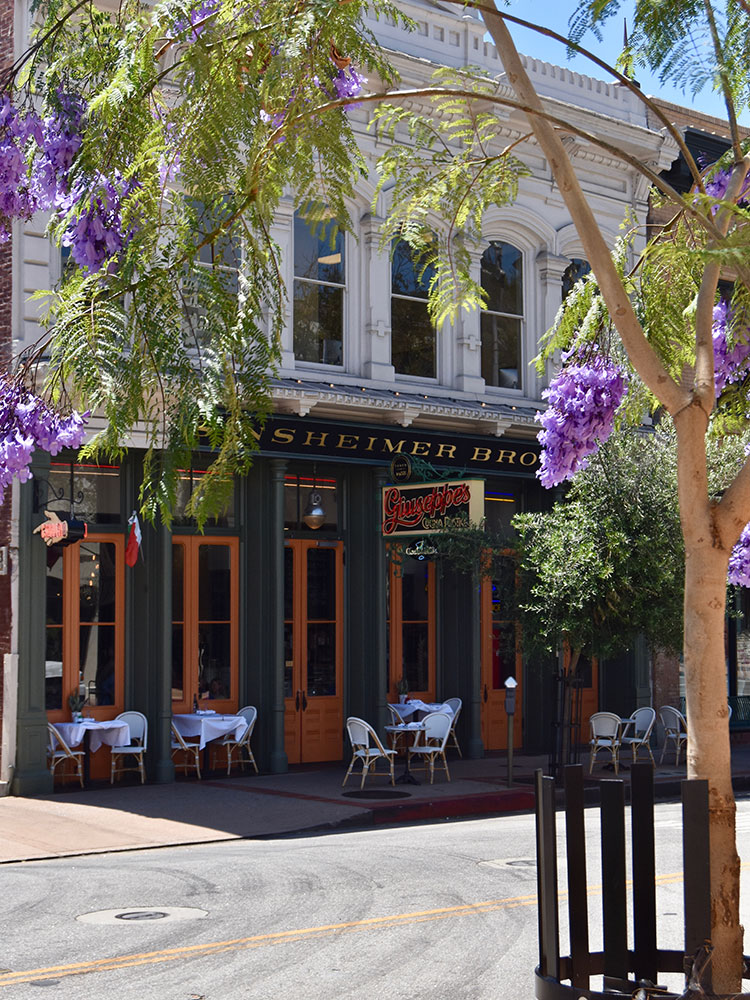
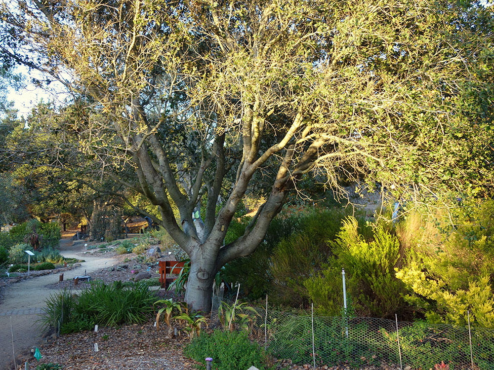
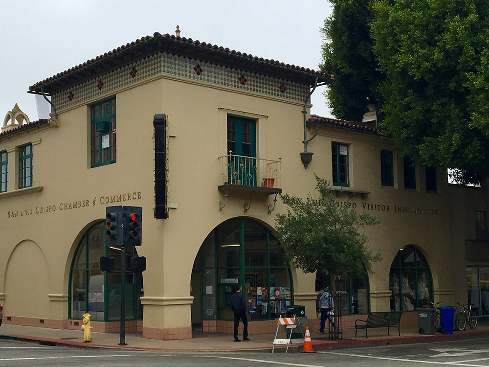

City located on the Central Coast of California, is a popular tourist destination, known for its historic architecture, vineyards, and hospitality
How to Get There
Overview
San Luis Obispo, often called SLO, is a friendly college town of about 47,000 residents on the Central Coast, about halfway between San Francisco and Los Angeles. It lies in a valley ringed by volcanic peaks known as the Nine Sisters, only about 10 miles from the beach, and it is known for its walkable downtown and active outdoor life.
People come to San Luis Obispo for its lively downtown on Higuera Street, its weekly Thursday-night farmers market, its wineries in the Edna Valley, and its nearby beaches. The city is also home to California Polytechnic State University (Cal Poly), whose students shape the town's energy, and it is a convenient base for visiting Hearst Castle, Morro Bay and Pismo Beach.
History
Father Junipero Serra founded Mission San Luis Obispo de Tolosa in 1772, the fifth of California's missions, and the Chumash and Spanish settlers farmed the valley. The city incorporated in 1856, the railroad arrived in 1894, and Cal Poly opened in 1901, turning the town into a university center. San Luis Obispo has been a leader in local planning, and in 1990 it became the first city in the world to ban smoking in all indoor public places.
Sightseeing and Popular Landmarks
Downtown's highlights include the mission in the center of town, Bubblegum Alley, the Fremont Theater, and the historic Higuera Street shops, while the pink, over-the-top Madonna Inn, opened in 1958, is the city's best-known landmark. Bishop Peak and Cerro San Luis rise above town with trails and views.
Culture and Museums
The History Center of San Luis Obispo County, in the old Carnegie Library, displays local artifacts, and the San Luis Obispo Museum of Art shows regional artists. The mission and its museum tell the story of the Chumash and the Spanish period, and the Palm Theatre, Fremont Theater and Cal Poly's Performing Arts Center host films and concerts.
Parks
Bishop Peak, the tallest of the Nine Sisters, and Cerro San Luis, with its "M" on the hillside, are the city's main hiking spots. Laguna Lake Park and Mission Plaza, along San Luis Obispo Creek, offer quiet green space downtown, and Montana de Oro State Park and Avila Beach are a short drive.
Seasons and Weather
San Luis Obispo has a Mediterranean climate, with warm, dry summers when highs are in the 80s°F and mild, wetter winters with highs in the 60s and about 22 inches of rain. Spring brings green hills and wildflowers, and fall is warm and clear. Because of its distance from the ocean, it is warmer and less foggy than the coast.
This article uses material from Wikipedia as well as information from official tourism and institutional sources. Key references include San Luis Obispo County Visitors Bureau, City of San Luis Obispo, California Polytechnic State University, History Center of San Luis Obispo County, and National Weather Service Los Angeles. Wikipedia material is from the article "San Luis Obispo, California", released under the Creative Commons Attribution-Share-Alike License 3.0.
Featured Locations and Trails


Bishop Peak
A rugged volcanic peak featuring steep hiking trails, panoramic views, and diverse native vegetation.

Piutus, CC BY 2.0, via Wikimedia Commons; Image Size Adjusted
Bubblegum Alley
Tourist attraction in downtown San Luis Obispo, California, known for its accumulation of used bubble gum on the walls of an alley

Leif Arne Storset, CC BY-SA 3.0, via Wikimedia Commons; Image Size Adjusted

Cerro San Luis Obispo
1,292 feet mountain in San Luis Obispo, is part of the chain of peaks called the Nine Sisters, and is a common spot for hiking, jogging and mountain biking

Jeremy Thompson from Los Angeles, California, CC BY 2.0, via Wikimedia Commons; Image Size Adjusted
.jpg){kind=link}
Madonna Inn
Motel in San Luis Obispo, opened in 1958, that quickly became a landmark on the Central Coast of California, is noted for its unique decor, pink dining room, and themed rooms

Jeremy Thompson from Los Angeles, California, CC BY 2.0, via Wikimedia Commons; Image Size Adjusted
Mission San Luis Obispo de Tolosa
Spanish mission founded September 1, 1772 is the namesake of San Luis Obispo and offers tours of the beautiful church, gardens, school and small museum that holds a collection of its artifacts



.jpg){kind=link}



.jpg){kind=link}